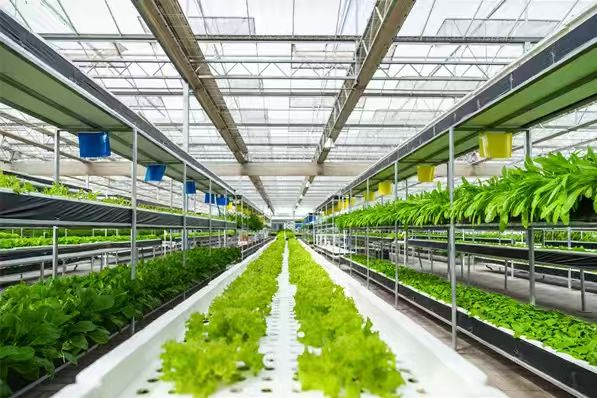

【地理与产业链定位】辽宁北能有机农业科技有限公司扎根辽宁省抚顺市抚顺县，业务横跨绿色有机种植、谷物清洁加工与土壤改良培肥三个环节。企业把"绿色农业发展技术、有机农业、土壤改良培肥"作为核心技术标签，在辽宁、吉林布局多个有机种植基地与深加工节点，下游对接盒马、麦德龙等高端商超与有机食品渠道。
【多基地运营的转型挑战】从单基地经验管理到多基地标准化运营，是这家企业过去两年最深的痛点。土壤改良效果评估、有机认证台账、基地之间的人员调度、跨基地的种植计划协同，这些原本"靠老师傅经验"的工作，在基地数量翻倍后逐步失灵；管理层意识到"经验式管理"已无法再支撑与高端渠道的标准对接。
【服务方式：以基地主任为支点】华认联国际项目组把基地主任这一"兵头将尾"角色作为本次服务的支点，通过现场走访、流程梳理与工作坊共创，输出一套《基地主任一日工作流程》《有机种植标准作业卡》《基地间协同调度表》等本地化工具，并配合线上微课体系让基地主任可在不同基地之间复用经验。
【价值沉淀与下一步】项目交付后，企业以基地主任轮训为切入点，把多基地协同的标准逐步内化到日常工作流；目前双方正就"数字化基地管理升级"做进一步探讨，希望把工具体系沉淀为可在线运营的管理平台。
← 返回客户案例